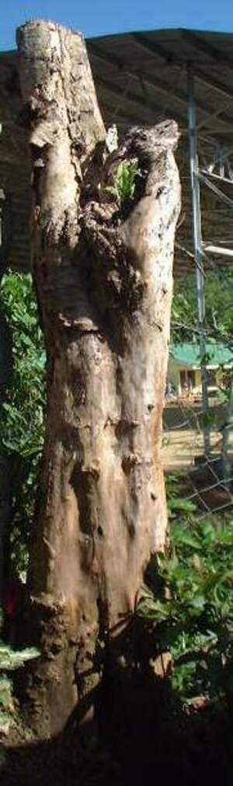
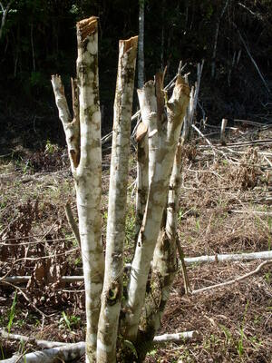
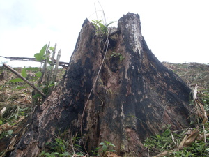

tued   
/tuʔɔd/
v_rt.
“pierce”
n.
stump of a tree
Mateles ne eg pinnuuwan ka tued te baliti su maluag.
Eng. stump
Tag. tuód
Ceb. tuod
Ilo.: púngdul
OCM: Ethnobotany (824)
Online dict status: -
Usage level: R
adj.
(tueren, -en) for a field to still have stumps of trees left after it has been burned off because it was not cut close enough to the ground
Egkeepes a ne eggendiyè te kamet ney su tueren.
Online dict status: -
Usage level: M
v.
(egtueren, eg><ø-) to pierce something e.g. with a knife
Egtueren ku te simat ka buu ku su eyew egkeered e ka nanè.
Syn. abbas
Syn. leus
Eng. pierce; stab
Tag. maglagós; tumúsok
Ceb. duslak
Ilo.: tudúken
OCM: Bodily Injuries (752)
Online dict status: -
Usage level: R
1.
n.
(patued, egpA><ø-) injection
Patued e pad diyè te duktur su egderalu a.
Morpho. ?affix
Eng. injection
Tag. iniksiyón
Ceb. indiksyon
Ilo.: iniksiyón
OCM: Medical Therapy (757)
Online dict status: -
Usage level: R
vi.
for someone (egkatued, actor, egkA><ø-) to be scratched (e.g. their skin)
Banteyi niyu ka bula su keme ke egkatued.
Eng. scratched
Online dict status: -
Usage level: M
Updated by: RJH,AAA,QDL
Last updated: 13/Oct/2009
This page last updated: 19/May/2012
Copyright © 2009-2010, Matigsalug Language Christian Association, Inc